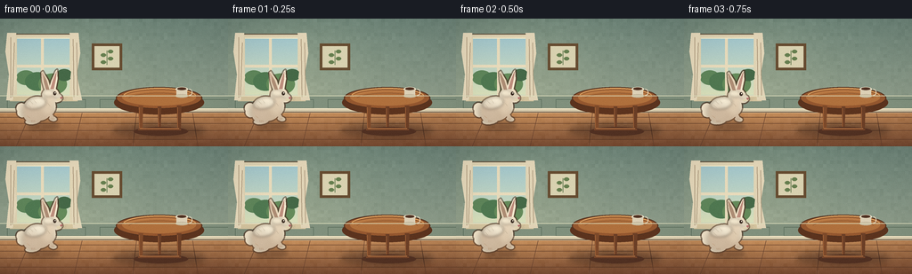
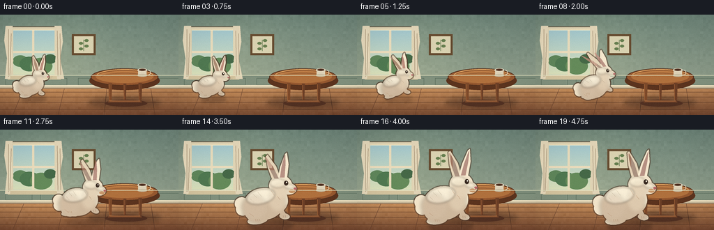
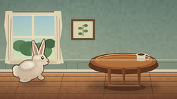
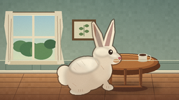
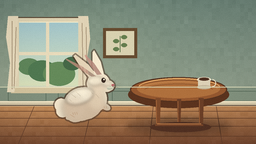
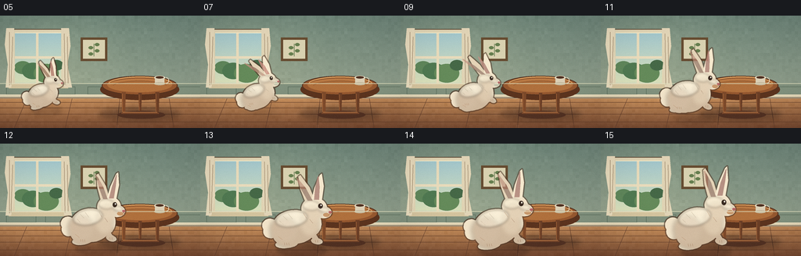
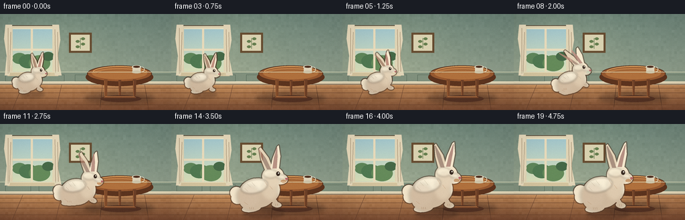
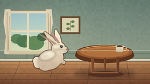
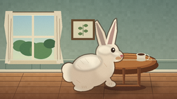

CODING AGENTS AS PIXEL WORLD MODELS
traex/DeepSeek-V4.1-Flash · dynamic_spatial_relationship_0020
点击播放 · 原生 RGB 像素
逐轮保存的候选
回放视频、检查图与代码变化。
每份候选均可单独播放。实际图片检查记录在下方工具轨迹中。
候选 01播放与检查图
点击播放 · 原生 RGB 像素


展开代码变化
--- 上一保存版本
+++ 本次保存版本
@@ -0,0 +1,528 @@
+from __future__ import annotations
+
+import math
+from pathlib import Path
+
+import numpy as np
+from PIL import Image, ImageChops, ImageDraw, ImageFilter
+
+import artifact_io
+
+
+CASE_DIR = Path(__file__).resolve().parent
+WIDTH, HEIGHT = 256, 144
+FRAME_COUNT, FPS = 20, 4
+SS = 4
+W, H = WIDTH * SS, HEIGHT * SS
+
+
+def s(value: float) -> int:
+ return int(round(value * SS))
+
+
+def rgba(color: tuple[int, int, int], alpha: int = 255) -> tuple[int, int, int, int]:
+ return color[0], color[1], color[2], alpha
+
+
+def mix(a: tuple[int, int, int], b: tuple[int, int, int], t: float) -> tuple[int, int, int]:
+ return tuple(int(round(a[i] * (1.0 - t) + b[i] * t)) for i in range(3))
+
+
+def smoothstep(t: float) -> float:
+ t = max(0.0, min(1.0, t))
+ return t * t * (3.0 - 2.0 * t)
+
+
+def render_room() -> Image.Image:
+ rng = np.random.default_rng(20)
+ yy, xx = np.mgrid[0:H, 0:W]
+ yn = yy / max(1, H - 1)
+ xn = xx / max(1, W - 1)
+
+ # A quiet sage wall above warm, honey-toned floorboards.
+ wall_top = np.array([104, 128, 119], dtype=float)
+ wall_bottom = np.array([143, 157, 140], dtype=float)
+ wall_t = np.clip(yn / 0.73, 0.0, 1.0)[..., None]
+ wall = wall_top * (1.0 - wall_t) + wall_bottom * wall_t
+
+ floor_top = np.array([185, 132, 87], dtype=float)
+ floor_bottom = np.array([111, 68, 47], dtype=float)
+ floor_t = np.clip((yn - 0.73) / 0.27, 0.0, 1.0)[..., None]
+ floor = floor_top * (1.0 - floor_t) + floor_bottom * floor_t
+
+ low_frequency = rng.normal(0.0, 2.1, (36, 64, 1))
+ low_frequency = np.repeat(np.repeat(low_frequency, 4, axis=0), 4, axis=1)[:H, :W]
+ low_frequency = np.repeat(np.repeat(low_frequency, 4, axis=0), 4, axis=1)[:H, :W]
+ fine = rng.normal(0.0, 1.35, (H, W, 1))
+
+ image = np.where((yy < s(104.5))[..., None], wall, floor)
+ image += low_frequency + fine
+
+ # Sunlight is strongest near the window and dissolves toward the right.
+ light = np.exp(-(((xn - 0.27) / 0.36) ** 2 + ((yn - 0.45) / 0.54) ** 2))
+ image += light[..., None] * np.array([17.0, 15.0, 9.0])
+ image = np.clip(image, 0, 255).astype(np.uint8)
+ room = Image.fromarray(image).convert("RGBA")
+ draw = ImageDraw.Draw(room, "RGBA")
+
+ # Floorboard seams and perspective-friendly plank variation.
+ draw.line([(0, s(105)), (W, s(105))], fill=rgba((83, 56, 43), 150), width=s(0.8))
+ for y in (111, 118, 126, 136):
+ draw.line([(0, s(y)), (W, s(y))], fill=rgba((92, 58, 41), 80), width=s(0.45))
+ for x0, x1 in ((34, 18), (92, 83), (153, 149), (216, 222)):
+ draw.line([(s(x0), s(106)), (s(x1), H)], fill=rgba((91, 58, 43), 62), width=s(0.45))
+
+ # Wainscot and baseboard.
+ draw.rectangle([(0, s(87)), (W, s(104))], fill=rgba((126, 143, 126), 100))
+ for x in (8, 58, 112, 166, 220):
+ draw.rectangle(
+ [(s(x), s(91)), (s(x + 38), s(101))],
+ outline=rgba((76, 96, 83), 85),
+ width=s(0.55),
+ )
+ draw.rectangle([(0, s(101)), (W, s(106))], fill=rgba((211, 200, 171), 230))
+ draw.line([(0, s(101.5)), (W, s(101.5))], fill=rgba((247, 235, 205), 220), width=s(1.1))
+ draw.line([(0, s(105.3)), (W, s(105.3))], fill=rgba((79, 58, 47), 100), width=s(0.8))
+
+ # Window casing and cool daylight.
+ draw.rounded_rectangle(
+ [(s(14), s(17)), (s(83), s(91))],
+ radius=s(2.2),
+ fill=rgba((221, 210, 180), 255),
+ outline=rgba((89, 72, 55), 180),
+ width=s(1.0),
+ )
+ draw.rectangle([(s(19), s(22)), (s(78), s(86))], fill=rgba((174, 207, 207), 255))
+ for y in range(s(23), s(86)):
+ t = (y - s(22)) / max(1, s(64))
+ col = mix((159, 196, 204), (214, 222, 186), t)
+ draw.line([(s(19), y), (s(78), y)], fill=rgba(col, 255))
+ # Soft foliage beyond the glass.
+ for cx, cy, r, col, a in (
+ (29, 66, 11, (92, 132, 91), 120),
+ (42, 70, 14, (77, 119, 82), 115),
+ (59, 73, 16, (98, 137, 91), 100),
+ (72, 63, 9, (67, 103, 72), 100),
+ ):
+ draw.ellipse(
+ [(s(cx - r), s(cy - r * 0.7)), (s(cx + r), s(cy + r * 0.8))],
+ fill=rgba(col, a),
+ )
+ draw.rectangle([(s(46), s(22)), (s(49), s(86))], fill=rgba((230, 218, 188), 255))
+ draw.rectangle([(s(19), s(52)), (s(78), s(55))], fill=rgba((230, 218, 188), 255))
+ draw.line([(s(19), s(22)), (s(78), s(22))], fill=rgba((250, 238, 205), 210), width=s(0.7))
+ draw.rectangle([(s(11), s(87)), (s(87), s(93))], fill=rgba((209, 194, 159), 255))
+ draw.line([(s(11), s(87)), (s(87), s(87))], fill=rgba((250, 237, 204), 220), width=s(1.0))
+
+ # Linen curtains with soft folds.
+ curtain_left = [
+ (s(8), s(16)), (s(18), s(16)), (s(16), s(42)), (s(19), s(66)),
+ (s(14), s(92)), (s(7), s(92)), (s(10), s(63)), (s(6), s(37)),
+ ]
+ curtain_right = [
+ (s(78), s(16)), (s(88), s(16)), (s(90), s(39)), (s(86), s(63)),
+ (s(92), s(92)), (s(82), s(92)), (s(79), s(66)), (s(82), s(42)),
+ ]
+ draw.polygon(curtain_left, fill=rgba((228, 216, 188), 248))
+ draw.polygon(curtain_right, fill=rgba((222, 210, 183), 248))
+ for pts in (
+ [(12, 21), (12, 89)], [(16, 27), (14, 88)],
+ [(82, 23), (83, 88)], [(86, 27), (87, 87)],
+ ):
+ draw.line([(s(pts[0][0]), s(pts[0][1])), (s(pts[1][0]), s(pts[1][1]))],
+ fill=rgba((163, 145, 119), 90), width=s(0.7))
+
+ # A small botanical print keeps the wall from feeling empty.
+ draw.rectangle([(s(103), s(28)), (s(137), s(58))], fill=rgba((99, 74, 49), 220))
+ draw.rectangle([(s(106), s(31)), (s(134), s(55))], fill=rgba((214, 208, 177), 245))
+ draw.line([(s(120), s(52)), (s(120), s(36))], fill=rgba((87, 113, 73), 210), width=s(0.8))
+ for yy0, side in ((49, -1), (45, 1), (41, -1), (37, 1)):
+ leaf_x0, leaf_x1 = sorted((120 + side * 1, 120 + side * 7))
+ draw.ellipse(
+ [(s(leaf_x0), s(yy0 - 2)), (s(leaf_x1), s(yy0 + 2))],
+ fill=rgba((99, 125, 80), 190),
+ )
+
+ # Blurred table shadow anchors it firmly to the floor.
+ shadow = Image.new("RGBA", (W, H), (0, 0, 0, 0))
+ sd = ImageDraw.Draw(shadow, "RGBA")
+ sd.ellipse([(s(126), s(118)), (s(231), s(134))], fill=rgba((43, 27, 24), 90))
+ sd.ellipse([(s(149), s(119)), (s(209), s(131))], fill=rgba((35, 23, 22), 105))
+ shadow = shadow.filter(ImageFilter.GaussianBlur(s(3.5)))
+ room = Image.alpha_composite(room, shadow)
+ draw = ImageDraw.Draw(room, "RGBA")
+
+ # Round wooden table, with a dark side band, pedestal, and splayed legs.
+ draw.ellipse(
+ [(s(128), s(81)), (s(229), s(108))],
+ fill=rgba((89, 50, 31), 255),
+ )
+ draw.ellipse(
+ [(s(130), s(77)), (s(227), s(102))],
+ fill=rgba((146, 86, 48), 255),
+ outline=rgba((83, 49, 32), 230),
+ width=s(1.25),
+ )
+ draw.ellipse(
+ [(s(137), s(79)), (s(220), s(98))],
+ fill=rgba((173, 111, 62), 255),
+ )
+ # Grain lines follow the elliptical top.
+ for inset, col in ((4, (112, 66, 39)), (8, (201, 139, 84)), (13, (129, 77, 44))):
+ draw.arc(
+ [(s(130 + inset), s(78 + inset * 0.45)), (s(227 - inset), s(102 - inset * 0.25))],
+ 197,
+ 345,
+ fill=rgba(col, 100),
+ width=s(0.45),
+ )
+ draw.arc(
+ [(s(137), s(78)), (s(221), s(99))],
+ 196,
+ 346,
+ fill=rgba((235, 176, 109), 145),
+ width=s(0.9),
+ )
+
+ # Legs are slightly tapered and have a lit edge.
+ for x, width, shade in ((158, 5, 0), (201, 5, 1), (179, 4, 1)):
+ top_y = 98 if x != 179 else 99
+ draw.polygon(
+ [(s(x - width / 2), s(top_y)), (s(x + width / 2), s(top_y)),
+ (s(x + width / 2 - 0.7), s(126)), (s(x - width / 2 + 0.7), s(126))],
+ fill=rgba((104, 61, 39) if shade else (122, 72, 43), 255),
+ )
+ draw.line(
+ [(s(x - width / 2 + 0.8), s(top_y + 2)), (s(x - width / 2 + 0.8), s(124))],
+ fill=rgba((174, 109, 63), 130),
+ width=s(0.55),
+ )
+ draw.ellipse([(s(150), s(122)), (s(211), s(132))], fill=rgba((78, 47, 35), 160))
+ draw.line([(s(155), s(125)), (s(203), s(125))], fill=rgba((115, 68, 43), 240), width=s(1.8))
+ draw.line([(s(157), s(123.8)), (s(201), s(123.8))], fill=rgba((194, 129, 77), 120), width=s(0.7))
+
+ # A simple ceramic cup adds scale without competing with the two subjects.
+ draw.ellipse([(s(197), s(77)), (s(211), s(82))], fill=rgba((235, 226, 203), 255))
+ draw.rectangle([(s(198), s(79)), (s(210), s(88))], fill=rgba((218, 207, 183), 255))
+ draw.ellipse([(s(197), s(85)), (s(211), s(89))], fill=rgba((196, 184, 160), 255))
+ draw.arc([(s(208), s(79)), (s(216), s(87))], 272, 92, fill=rgba((222, 211, 188), 255), width=s(1.1))
+ draw.ellipse([(s(199), s(77.4)), (s(209), s(80.5))], fill=rgba((77, 48, 35), 240))
+
+ # Fine architectural highlights.
+ draw.line([(0, s(87)), (W, s(87))], fill=rgba((220, 221, 190), 95), width=s(0.7))
+ return room
+
+
+ROOM = render_room()
+
+
+def rotated_ellipse(
+ draw: ImageDraw.ImageDraw,
+ cx: float,
+ cy: float,
+ rx: float,
+ ry: float,
+ angle: float,
+ fill,
+ outline=None,
+ width: int = 1,
+) -> None:
+ points = []
+ ca, sa = math.cos(angle), math.sin(angle)
+ for i in range(56):
+ a = 2.0 * math.pi * i / 56.0
+ x, y = rx * math.cos(a), ry * math.sin(a)
+ points.append((s(cx + x * ca - y * sa), s(cy + x * sa + y * ca)))
+ draw.polygon(points, fill=fill)
+ if outline is not None:
+ draw.line(points + [points[0]], fill=outline, width=width, joint="curve")
+
+
+def rabbit_transform(params: dict):
+ cx = params["x"]
+ base = params["base"]
+ sx = params["sx"]
+ sy = params["sy"]
+ angle = params["angle"]
+ pivot_x, pivot_y = 0.0, -22.0
+ ca, sa = math.cos(angle), math.sin(angle)
+
+ def point(lx: float, ly: float) -> tuple[int, int]:
+ dx, dy = lx - pivot_x, ly - pivot_y
+ rx = pivot_x + dx * ca - dy * sa
+ ry = pivot_y + dx * sa + dy * ca
+ return s(cx + rx * sx), s(base + ry * sy)
+
+ def ellipse(cx0: float, cy0: float, rx0: float, ry0: float, angle0: float = 0.0):
+ pts = []
+ c0, s0 = math.cos(angle0), math.sin(angle0)
+ for i in range(44):
+ a = 2.0 * math.pi * i / 44.0
+ ex, ey = rx0 * math.cos(a), ry0 * math.sin(a)
+ lx = cx0 + ex * c0 - ey * s0
+ ly = cy0 + ex * s0 + ey * c0
+ pts.append(point(lx, ly))
+ return pts
+
+ return point, ellipse
+
+
+def add_silhouette(layer: Image.Image, params: dict) -> None:
+ draw = ImageDraw.Draw(layer, "RGBA")
+ point, ellipse = rabbit_transform(params)
+ base_col = rgba((239, 226, 202), 255)
+ air = params["air"]
+ scale = max(params["sx"], params["sy"])
+
+ # Tail, far limbs, and ears are placed behind the torso.
+ for dx, dy, r in ((-27, -21, 8), (-30, -24, 7), (-29, -18, 7)):
+ draw.polygon(ellipse(dx, dy, r, r), fill=base_col)
+
+ foot = (-14.0 - 3.0 * air, -5.5 - 8.0 * air)
+ hip = (-9.0, -20.0)
+ draw.line([point(*hip), point(*foot)], fill=base_col, width=max(2, int(7.5 * scale * SS)))
+ draw.polygon(ellipse(foot[0], foot[1], 10.5, 4.2, -0.12 - 0.3 * air), fill=base_col)
+
+ paw = (14.0 + 1.5 * air, -9.0 - 8.0 * air)
+ shoulder = (6.0, -23.0)
+ draw.line([point(*shoulder), point(*paw)], fill=base_col, width=max(2, int(5.2 * scale * SS)))
+ draw.polygon(ellipse(paw[0], paw[1], 5.4, 3.2, 0.18 + 0.4 * air), fill=base_col)
+
+ def ear_points(base_x: float, tip_x: float, base_y: float, tip_y: float, w0: float, w1: float):
+ ear_back = params["ear_back"]
+ tip_x -= 12.0 * ear_back
+ tip_y += 1.5 * ear_back
+ mx = (base_x + tip_x) * 0.5
+ my = (base_y + tip_y) * 0.5
+ pts = [
+ (base_x - w0, base_y),
+ (mx - w1 * 0.9, my + 1.0),
+ (tip_x - w1 * 0.22, tip_y + 1.5),
+ (tip_x + w1 * 0.2, tip_y),
+ (mx + w1 * 1.05, my - 1.0),
+ (base_x + w0, base_y),
+ ]
+ return [point(x, y) for x, y in pts], [(base_x, base_y), (tip_x, tip_y), w0, w1]
+
+ far_pts, far_meta = ear_points(7.0, -1.0, -49.0, -76.0, 4.6, 4.3)
+ draw.polygon(far_pts, fill=rgba((226, 210, 184), 255))
+
+ # Torso union: rounded haunch, belly, chest, head, and a plump muzzle.
+ draw.polygon(ellipse(-7.0, -23.0, 20.5, 17.2, -0.04), fill=base_col)
+ draw.polygon(ellipse(-11.0, -20.5, 16.5, 15.5, -0.06), fill=base_col)
+ draw.polygon(ellipse(6.0, -27.0, 12.0, 14.0, -0.10), fill=base_col)
+ draw.polygon(ellipse(11.0, -42.0, 12.0, 11.2, 0.04), fill=base_col)
+ draw.polygon(ellipse(19.0, -38.5, 8.2, 6.2, 0.06), fill=base_col)
+ draw.polygon(ellipse(-16.0, -15.0, 11.0, 10.5, -0.10), fill=base_col)
+
+ front_pts, front_meta = ear_points(13.0, 19.0, -50.0, -78.0, 4.8, 4.4)
+ draw.polygon(front_pts, fill=rgba((243, 231, 207), 255))
+
+ return far_meta, front_meta
+
+
+def add_rabbit(scene: Image.Image, params: dict) -> Image.Image:
+ layer = Image.new("RGBA", (W, H), (0, 0, 0, 0))
+ far_meta, front_meta = add_silhouette(layer, params)
+ point, ellipse = rabbit_transform(params)
+ draw = ImageDraw.Draw(layer, "RGBA")
+
+ # A soft dark rim separates the pale rabbit from both wall and wood.
+ alpha = np.array(layer.getchannel("A"), dtype=np.uint8)
+ solid = alpha > 20
+ dilated = solid.copy()
+ for dy in range(-s(1.5), s(1.5) + 1):
+ for dx in range(-s(1.5), s(1.5) + 1):
+ if dx * dx + dy * dy <= (s(1.5) + 0.2) ** 2:
+ dilated |= np.roll(np.roll(solid, dy, axis=0), dx, axis=1)
+ edge = dilated & ~solid
+ rim = Image.new("RGBA", (W, H), rgba((78, 57, 44), 0))
+ rim.putalpha(Image.fromarray((edge * 150).astype(np.uint8), "L"))
+ scene = Image.alpha_composite(scene, rim)
+
+ # Broad warm shading and highlights are blurred, then clipped to fur.
+ shade = Image.new("RGBA", (W, H), (0, 0, 0, 0))
+ sd = ImageDraw.Draw(shade, "RGBA")
+ sd.polygon(ellipse(-4, -13, 25, 13, -0.02), fill=rgba((139, 103, 78), 92))
+ sd.polygon(ellipse(-17, -20, 13, 13), fill=rgba((139, 103, 78), 82))
+ sd.polygon(ellipse(7, -27, 9, 12, -0.08), fill=rgba((150, 112, 83), 58))
+ sd.polygon(ellipse(10, -37, 9, 8), fill=rgba((152, 111, 82), 40))
+ shade = shade.filter(ImageFilter.GaussianBlur(s(2.4)))
+ shade.putalpha(ImageChops.multiply(shade.getchannel("A"), layer.getchannel("A")))
+ layer = Image.alpha_composite(layer, shade)
+
+ light = Image.new("RGBA", (W, H), (0, 0, 0, 0))
+ ld = ImageDraw.Draw(light, "RGBA")
+ ld.polygon(ellipse(-10, -31, 15, 8, -0.20), fill=rgba((255, 250, 232), 115))
+ ld.polygon(ellipse(8, -45, 8, 5, 0.06), fill=rgba((255, 249, 227), 95))
+ ld.polygon(ellipse(20, -41, 5, 2.5, 0.10), fill=rgba((255, 249, 230), 90))
+ light = light.filter(ImageFilter.GaussianBlur(s(1.4)))
+ light.putalpha(ImageChops.multiply(light.getchannel("A"), layer.getchannel("A")))
+ layer = Image.alpha_composite(layer, light)
+ draw = ImageDraw.Draw(layer, "RGBA")
+
+ # Inner ears.
+ for meta, color in (
+ (far_meta, (188, 139, 124, 155)),
+ (front_meta, (203, 142, 132, 175)),
+ ):
+ (bx, by), (tx, ty), w0, w1 = meta
+ ear_back = params["ear_back"]
+ tx -= 12.0 * ear_back
+ ty += 1.5 * ear_back
+ inner = [
+ point(bx - w0 * 0.48, by - 1.0),
+ point((bx + tx) * 0.5 - w1 * 0.44, (by + ty) * 0.5 + 1.0),
+ point(tx - w1 * 0.05, ty + 3.0),
+ point(tx + w1 * 0.13, ty + 2.0),
+ point((bx + tx) * 0.5 + w1 * 0.48, (by + ty) * 0.5 - 0.8),
+ point(bx + w0 * 0.48, by - 1.0),
+ ]
+ draw.polygon(inner, fill=color)
+
+ # Face, eye, nose, cheek, and whiskers.
+ draw.polygon(ellipse(16.7, -44.8, 2.15, 2.55, 0.04), fill=rgba((55, 42, 35), 255))
+ draw.polygon(ellipse(17.25, -45.55, 0.62, 0.75, 0.0), fill=rgba((255, 250, 232), 245))
+ draw.polygon(ellipse(26.0, -38.6, 1.65, 1.15, 0.05), fill=rgba((179, 100, 103), 255))
+ draw.line([point(25.7, -37.2), point(24.1, -35.5), point(22.7, -36.1)],
+ fill=rgba((91, 63, 51), 170), width=s(0.45), joint="curve")
+ draw.line([point(25.7, -37.2), point(27.2, -35.6), point(28.3, -36.1)],
+ fill=rgba((91, 63, 51), 145), width=s(0.4), joint="curve")
+ draw.polygon(ellipse(22.5, -35.8, 3.2, 2.0, 0.03), fill=rgba((255, 244, 220), 75))
+ for dx, dy in ((8, -1.5), (7, 1.3), (6, 3.5)):
+ draw.line([point(26.4, -38.0), point(26.4 + dx, -38.0 + dy)],
+ fill=rgba((105, 82, 66), 90), width=s(0.22))
+
+ # A few directional fur strokes, kept subtle at the final scale.
+ for x0, y0, x1, y1 in (
+ (-21, -29, -17, -25), (-18, -34, -14, -30), (-13, -36, -9, -31),
+ (1, -37, 4, -32), (7, -31, 10, -27), (-22, -13, -18, -10),
+ ):
+ draw.line([point(x0, y0), point(x1, y1)],
+ fill=rgba((181, 145, 116), 90), width=s(0.25))
+
+ # Toes and paw creases.
+ air = params["air"]
+ foot = (-14.0 - 3.0 * air, -5.5 - 8.0 * air)
+ paw = (14.0 + 1.5 * air, -9.0 - 8.0 * air)
+ for off in (-2.0, 0.0, 2.0):
+ draw.line([point(foot[0] + off, foot[1] - 1.3), point(foot[0] + off + 0.4, foot[1] + 1.1)],
+ fill=rgba((153, 119, 93), 125), width=s(0.28))
+ for off in (-1.4, 0.7):
+ draw.line([point(paw[0] + off, paw[1] - 1.0), point(paw[0] + off + 0.2, paw[1] + 1.2)],
+ fill=rgba((151, 117, 91), 115), width=s(0.25))
+
+ scene = Image.alpha_composite(scene, layer)
+ return scene
+
+
+def rabbit_shadow(scene: Image.Image, params: dict) -> Image.Image:
+ shadow = Image.new("RGBA", (W, H), (0, 0, 0, 0))
+ draw = ImageDraw.Draw(shadow, "RGBA")
+ air = params["air"]
+ cx = params["x"] + 2.0 * air
+ cy = params["base"] + 1.0
+ rx = 23.0 * params["sx"] * (1.0 - 0.12 * air)
+ ry = 5.0 * params["sx"] * (1.0 - 0.20 * air)
+ alpha = int(80 * (1.0 - 0.46 * air))
+ draw.ellipse([(s(cx - rx), s(cy - ry)), (s(cx + rx), s(cy + ry))],
+ fill=rgba((52, 31, 26), alpha))
+ if air < 0.3:
+ draw.ellipse([(s(cx - 12 * params["sx"]), s(cy - 2.2)),
+ (s(cx + 14 * params["sx"]), s(cy + 2.2))],
+ fill=rgba((46, 27, 23), int(65 * (1.0 - air / 0.3))))
+ shadow = shadow.filter(ImageFilter.GaussianBlur(s(2.2 + 2.8 * air)))
+ return Image.alpha_composite(scene, shadow)
+
+
+def ease_keys(frame: int, keys: list[tuple[int, float]]) -> float:
+ if frame <= keys[0][0]:
+ return keys[0][1]
+ for (f0, v0), (f1, v1) in zip(keys[:-1], keys[1:]):
+ if frame <= f1:
+ t = smoothstep((frame - f0) / max(1e-9, f1 - f0))
+ return v0 * (1.0 - t) + v1 * t
+ return keys[-1][1]
+
+
+def frame_params(index: int) -> dict:
+ x = ease_keys(index, [
+ (0, 48.0), (3, 50.0), (4, 53.0), (5, 59.0), (7, 79.0),
+ (9, 101.0), (11, 119.0), (13, 130.0), (15, 134.0), (19, 134.5),
+ ])
+ depth = ease_keys(index, [
+ (0, 0.0), (4, 0.02), (5, 0.06), (7, 0.18), (9, 0.34),
+ (11, 0.60), (12, 0.76), (13, 0.88), (15, 0.98), (19, 1.0),
+ ])
+ hop = ease_keys(index, [
+ (0, 0.0), (4, 0.0), (5, 7.0), (6, 24.0), (7, 38.0),
+ (8, 46.0), (9, 42.0), (10, 32.0), (11, 18.0), (12, 6.0),
+ (13, 0.0), (19, 0.0),
+ ])
+ crouch = ease_keys(index, [
+ (0, 0.0), (2, 0.01), (3, 0.07), (4, 0.22), (5, 0.04),
+ (6, 0.0), (12, 0.02), (13, 0.20), (14, 0.10), (15, 0.01), (19, 0.0),
+ ])
+ stretch = ease_keys(index, [
+ (0, 0.0), (4, 0.0), (5, 0.15), (6, 0.11), (7, 0.06),
+ (8, 0.0), (12, 0.0), (13, -0.02), (15, 0.0), (19, 0.0),
+ ])
+ angle = ease_keys(index, [
+ (0, 0.0), (3, 0.02), (4, 0.06), (5, -0.10), (7, -0.16),
+ (9, -0.07), (11, 0.05), (13, 0.02), (14, -0.03), (15, 0.0), (19, 0.0),
+ ])
+ ear_back = ease_keys(index, [
+ (0, 0.0), (3, 0.02), (4, 0.12), (5, 0.30), (6, 0.58),
+ (8, 0.78), (9, 0.72), (10, 0.50), (11, 0.25), (12, 0.08),
+ (13, 0.22), (14, 0.12), (15, 0.02), (19, 0.0),
+ ])
+ air = min(1.0, hop / 32.0)
+ scale = 0.80 + 0.61 * depth
+ if index == 1:
+ ear_back = 0.06
+ if index == 2:
+ ear_back = 0.0
+ breathe = 0.012 * math.sin((index - 15) * 1.55) if index >= 15 else 0.0
+ sy = scale * (1.0 - 0.27 * crouch + 0.12 * stretch + breathe)
+ sx = scale * (1.0 + 0.14 * crouch - 0.045 * stretch)
+ return {
+ "x": x,
+ "base": 120.0 + 18.0 * depth,
+ "sx": sx,
+ "sy": sy,
+ "angle": angle,
+ "air": air,
+ "ear_back": ear_back,
+ }
+
+
+def grade(frame: Image.Image, index: int) -> np.ndarray:
+ arr = np.asarray(frame.convert("RGB"), dtype=np.float32)
+ yy, xx = np.mgrid[0:HEIGHT, 0:WIDTH]
+ cx, cy = WIDTH * 0.53, HEIGHT * 0.49
+ radius = np.sqrt(((xx - cx) / (WIDTH * 0.62)) ** 2 + ((yy - cy) / (HEIGHT * 0.74)) ** 2)
+ vignette = 1.0 - 0.11 * np.clip((radius - 0.48) / 0.72, 0.0, 1.0) ** 1.6
+ arr *= vignette[..., None]
+ arr += np.array([2.5, 1.3, -1.0], dtype=np.float32)
+ # Very light per-frame grain prevents the procedural render from feeling plastic.
+ rng = np.random.default_rng(700 + index)
+ arr += rng.normal(0.0, 0.85, (HEIGHT, WIDTH, 1))
+ return np.clip(arr, 0, 255).astype(np.uint8)
+
+
+def render_frame(index: int) -> np.ndarray:
+ params = frame_params(index)
+ scene = rabbit_shadow(ROOM.copy(), params)
+ scene = add_rabbit(scene, params)
+ frame = scene.convert("RGB").resize((WIDTH, HEIGHT), Image.Resampling.LANCZOS)
+ return grade(frame, index)
+
+
+def main() -> None:
+ frames = np.stack([render_frame(i) for i in range(FRAME_COUNT)], axis=0)
+ artifact_io.save(frames, CASE_DIR)
+ print(f"wrote {FRAME_COUNT} frames to {CASE_DIR}")
+
+
+if __name__ == "__main__":
+ main()
候选 02播放与检查图
点击播放 · 原生 RGB 像素

展开代码变化
--- 上一保存版本
+++ 本次保存版本
@@ -337,7 +337,7 @@
dilated |= np.roll(np.roll(solid, dy, axis=0), dx, axis=1)
edge = dilated & ~solid
rim = Image.new("RGBA", (W, H), rgba((78, 57, 44), 0))
- rim.putalpha(Image.fromarray((edge * 150).astype(np.uint8), "L"))
+ rim.putalpha(Image.fromarray((edge * 150).astype(np.uint8)))
scene = Image.alpha_composite(scene, rim)
# Broad warm shading and highlights are blurred, then clipped to fur.
@@ -447,16 +447,16 @@
def frame_params(index: int) -> dict:
x = ease_keys(index, [
- (0, 48.0), (3, 50.0), (4, 53.0), (5, 59.0), (7, 79.0),
- (9, 101.0), (11, 119.0), (13, 130.0), (15, 134.0), (19, 134.5),
+ (0, 48.0), (3, 50.0), (4, 53.0), (5, 59.0), (7, 80.0),
+ (9, 103.0), (11, 122.0), (13, 136.0), (15, 140.0), (19, 140.5),
])
depth = ease_keys(index, [
(0, 0.0), (4, 0.02), (5, 0.06), (7, 0.18), (9, 0.34),
(11, 0.60), (12, 0.76), (13, 0.88), (15, 0.98), (19, 1.0),
])
hop = ease_keys(index, [
- (0, 0.0), (4, 0.0), (5, 7.0), (6, 24.0), (7, 38.0),
- (8, 46.0), (9, 42.0), (10, 32.0), (11, 18.0), (12, 6.0),
+ (0, 0.0), (4, 0.0), (5, 7.0), (6, 22.0), (7, 35.0),
+ (8, 41.0), (9, 38.0), (10, 29.0), (11, 17.0), (12, 6.0),
(13, 0.0), (19, 0.0),
])
crouch = ease_keys(index, [
@@ -477,7 +477,7 @@
(13, 0.22), (14, 0.12), (15, 0.02), (19, 0.0),
])
air = min(1.0, hop / 32.0)
- scale = 0.80 + 0.61 * depth
+ scale = 0.80 + 0.57 * depth
if index == 1:
ear_back = 0.06
if index == 2:
@@ -487,7 +487,7 @@
sx = scale * (1.0 + 0.14 * crouch - 0.045 * stretch)
return {
"x": x,
- "base": 120.0 + 18.0 * depth,
+ "base": 120.0 + 14.0 * depth,
"sx": sx,
"sy": sy,
"angle": angle,
候选 03播放与检查图

可观测工具轨迹
实际执行的命令与返回图片。
命令 1exit 0
/bin/bash -c "pwd && rg --files -g 'prompt.txt' -g 'GENERATION_RULES.md' -g 'task_spec.json' -g '"'!*.mp4'"' -g '"'!*.png'"'"
命令 2exit 0
/bin/bash -c 'ls -la'
命令 3exit 0
/bin/bash -c 'cat prompt.txt'
命令 4exit 0
/bin/bash -c 'cat GENERATION_RULES.md'
命令 5exit 0
/bin/bash -c 'cat task_spec.json'
命令 6exit 0
/bin/bash -c "sed -n '1,240p' artifact_io.py"
命令 7exit 0
/bin/bash -c "python - <<'PY'
from PIL import Image, ImageFilter
import PIL, numpy
print('PIL', PIL.__version__, 'numpy', numpy.__version__)
PY
command -v ffmpeg || true"命令 8exit 1
/bin/bash -c 'python generate.py'
命令 9exit 0
/bin/bash -c "nl -ba generate.py | sed -n '128,150p'"
命令 10exit 0
/bin/bash -c 'python generate.py'
命令 11exit 0
/bin/bash -c "python - <<'PY'
from PIL import Image, ImageDraw
from pathlib import Path
files=[5,7,9,11,12,13,14,15]
w,h=256,144
sheet=Image.new('RGB',(w*4,(h+20)*2),(24,26,30))
d=ImageDraw.Draw(sheet)
for j,i in enumerate(files):
im=Image.open(f'frames/{i:02d}.png')
x=(j%4)*w; y=(j//4)*(h+20)
d.text((x+5,y+3),f'{i:02d}',fill='white')
sheet.paste(im,(x,y+20))
sheet.save('.tmp/motion_sheet.png')
PY"命令 12exit 0
/bin/bash -c 'mkdir -p .tmp/candidate1 && cp inspection.png .tmp/candidate1/ && cp -r frames .tmp/candidate1/'
命令 13exit 0
/bin/bash -c 'python generate.py'
命令 14exit 0
/bin/bash -c "python - <<'PY'
from pathlib import Path
from PIL import Image
import numpy as np
files=sorted(Path('frames').glob('*.png'))
imgs=[np.asarray(Image.open(p)) for p in files]
print('frames',len(imgs),'shape',imgs[0].shape)
for i in (0,8,19):
a=imgs[i]
print(i,'minmax',int(a.min()),int(a.max()),'mean',round(float(a.mean()),2))
print('pixels.npz bytes',Path('pixels.npz').stat().st_size)
print('index.html bytes',Path('index.html').stat().st_size)
PY"命令 15exit 0
/bin/bash -c "python - <<'PY'
from pathlib import Path
import json, re
import numpy as np
from PIL import Image
spec=json.loads(Path('task_spec.json').read_text())
n,h,w=spec['frames'],spec['height'],spec['width']
files=sorted(Path('frames').glob('*.png'))
assert len(files)==n
for p in files:
im=Image.open(p)
assert im.size==(w,h) and im.mode=='RGB', (p,im.size,im.mode)
z=np.load('pixels.npz')
assert z['pixels'].shape==(h,w,n),z['pixels'].shape
html=Path('index.html').read_text()
assert '__DATA__' not in html and '__ID__' not in html
assert len(re.findall(r'\"deltas\":',html))==1
print('validated:', n, 'RGB frames at', w, 'x', h, '; player payload present')
PY"命令 16exit 0
/bin/bash -c 'git status --short 2>/dev/null || true; ls -lh index.html inspection.png pixels.npz frames/00.png frames/19.png'
视觉工具实际返回图片 1

视觉工具实际返回图片 2

视觉工具实际返回图片 3

视觉工具实际返回图片 4

视觉工具实际返回图片 5

视觉工具实际返回图片 6

视觉工具实际返回图片 7

视觉工具实际返回图片 8

保存候选 3 份；完成命令 16 次；可验证图片返回 8 张。原始 API 响应与完整日志保留在本地。